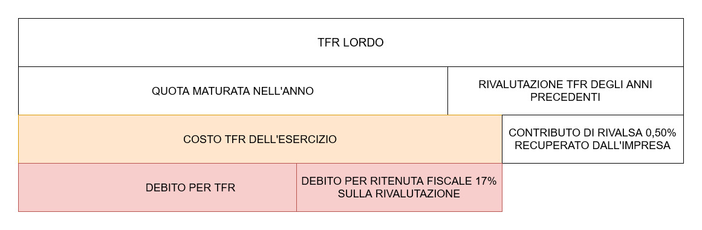

I lavoratori dipendenti, al termine del proprio contratto, hanno diritto a ricevere una somma di denaro denominata Trattamento di Fine Rapporto (TFR).
TFR
Intro

Come si calcola la quota di TFR maturata nell'anno e la rivalutazione del TFR degli anni precedenti?
Come si calcola il contributo di rivalsa dello 0,50% che l'impresa riesce a recuperare?
TFR in partita doppia
Conti di riferimento:
1) TFR (Conto economico di reddito acceso a costi d'esercizio)
2) Debiti per TFR (Conto finanziario acceso ai debiti)
3) Debiti per ritenute da versare (Conto finanziario acceso ai debiti)
Esercizio:
Effettua le rilevazioni del TFR al 31/12/2020, considerando i seguenti dati:
- Retribuzioni del personale pari a 162.000 euro, in tutto il 2020.
- Debiti TFR relativo ai precedenti anni: 33.800 euro
- Indice dei prezzi al consumo Dicembre 2019 = 100
- Indice dei prezzi al consumo Dicembre 2020 = 101,6
Questo articolo è sotto la licenza Licenza Creative Commons Attribution Share Alike 4.0